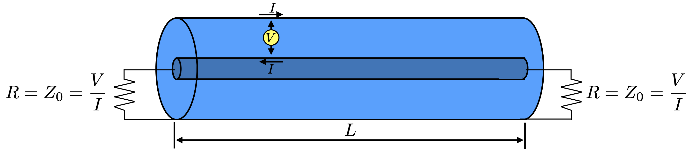

Noise in axion experiments#
Nyquist’s theorem for the noise power emitted by a resistor#
We have an apparatus at some low temperature \(T\) with microwaves moving around it, and the microwaves we care most about are carried in cables. Some of those microwaves are potentially originating with axion dark matter. The vast majority of them are instead originating in the random motions of charged electrons undergoing random motion at the physical temperature \(T\) of the apparatus.
This derivation is all about figuring out the noise power emitted by a humble resistor. In order to do that, we start off by examining a coaxial cable that the resistor will eventually be connected to. Here is a diagram of that cable.

The cable is of length \(L\). We’re going to focus on travelling waves travelling to the right. These can be represented by an ordinary one dimensional travelling wave, \(\psi=\psi^0\cos(kx-\omega t)\). We set \(t=0\) and focus on what things look like in \(x\), so \(\psi=\psi^0\cos(kx)\). Now we do something that on the face of it seems peculier, and assert some boundary conditions that are not really physical. These are called periodic boundary conditions, and state that only waves whose phase is the same at the two ends of this piece of cable are permitted. This means that the longest wavelength that can travel down the cable is \(L\). We’ll assume that waves travel at speed \(c\) in the cable, so that \(\omega=ck\). For the boundary condition to be true we must have
But using an addition formula,
For this to equal \(\cos(kx)\), we must have \(\cos(kL)=1\) and \(\sin(kL)=0\). These two constraints are only satisfied if \(kL=2n\pi\). This means that with these periodic boundary conditions in place, the gap between modes in wavenumber is \(\delta k\,L=2\pi\), or \(\delta k = 2\pi/L\).
Now, we’re actually interested in the frequency spacing between modes. Because \(\omega = 2\pi f=ck\) we have \(\delta k = 2\pi\delta f/c\). We substitute that into our expression for \(\delta k\) and obtain
Now, suppose we have a frequency range between two ends \(f_1\) and \(f_2\), called a band, with bandwidth \(B=f_2-f_1\). Then the number of modes that fit in this band is \(B/(c/L)=BL/c\). If each of these modes is fed by some source of radiation at temperature \(T\), and has reached thermodynamic equilibrium with this radiation source, then by the classical theorem of equipartition, each mode contains an average energy of \(k_BT\). Recall that modes of oscillators each have two degrees of freedom owing to their storing energy in kinetic and potential forms. Therefore the total energy \(U\) in the modes in this band is
The energy density, or energy per unit length in these modes, \(u\), is
The average energy exiting out of the right hand end of the cable per unit time is the energy density in these modes times their velocity of propagation, which is c. This leads to a formula for the power exiting the right hand end of the cable in a bandwidth, or range, \(B\), in frequency.
Now let us terminate the cable at both ends with resistive loads, whose resistances are equal to the characteristic impedence of the cable. The characteristic impedence is the ratio of the voltage between the outer conductor and the current flowing in the conductors (in opposite directions in the two conductors).

It turns out that if the characteristic impedence is made equal to the terminating impedences, any power travelling down the cable and encountering the resistor is absorbed by the resistor without any reflection.
We are requiring that the cable is in thermodynamic equilibrium with the resistances. If all the power that flows into the resistors is absorbed without reflection, then if the resistor doesn’t emit anything it would warm up because of the energy dissipated in it from the incoming power. In thermodynamic equilibrium, it must be that the resistor emits the same amount of power as it is absorbing from the cable in the bandwidth \(B\). Since this argument is independent of the bandwidth, we conclude that Equation 7.1 is also a formula for the power emitted into a bandwidth \(B\) of frequency by a resistor at temperature \(T\) in thermodynamic equilibrium with a cable with characteristic impedence equal to that of the resistor. This result is known as Nyquist’s theorem.
We can extend this result by imagining that we measure the energy that the resistor emits, or absorbs, in a time \(t\). This will be the power times the time interval \(t\). On average, the energy in the flowing radiation will be
Fluctuations and the radiometer equation#
As shown above, we can work out the average energy emitted by a cable, or a resistor matched to it, into a bandwidth \(B\) when they have reached thermodynamic equilibrium at temperature \(T\), when the energy is measured over a time interval \(t\). However, this is only the average energy flow. In practice, in any given time interval \(t\), the energy will probably be near to this average value, but will differ from it by some small amount. After all, the radiation being measured consists of noise, and noise is always subject to fluctuations. These fluctuations need to be understood by the experimentalist who is trying to detect a small signal, such as that which may be emitted by axion dark matter converting into radiation in our detector.
The level of fluctuations in the noise background is regulated by the radiometer equation, which we now derive. Consider a classical system which has available to it a contiouous set of states having energy \(E\). The system is in thermal equilibrium at a temperature \(T\). We do not know how many available states there are at each energy \(E\), or indeed what the system consists of, but we do know that it is governed by Maxwell Bolzmann statistics. The probability density \(p(E)\) of the system having energy \(E\) can be
where \(A(T)\) is the number of available states at energy \(E\), and is generally a function of the temperature of the system. It will make the derivation easier to write \(\beta=1/(k_BT)\), so that we obtain
The probability density obeys a normalisation condition, so that
where during this derivation all integrals will be between \(E=0\) and \(E=+\infty\). We differentiate this expression with respect to \(\beta\) and obtain
We bring the differential inside the integral over energies and apply the product rule to differentiate first \(A(\beta)\) and then \(e^{-\beta E}\), both of which are \(\beta\) dependent.
The right hand side is \(\int\,Ep(E)dE\), which is \(\overline{E}\), the average value of the energy. The \(dA/d\beta\) on the left has no \(E\) dependence and can be pulled out of the integral. In addition, we can introduce \(A/A\) on the right. We obtain
The integral is \(1\) because it is equal to \(\int\,p(E)dE\). Hence we can write
We next return to the expression for \(\overline{E}\), the average energy.
Differentiating,
We substitute in from Equation 7.1, and factor the \(\overline{E}\) out of the left hand integral.
Next we re-introduce temperature \(T\) by writing
Now, \(\beta=1/(k_BT)\), so that \(d\beta/dT=-1/(k_BT^2)\), and \(dT/d\beta=-k_BT^2\). Substituting this in to Equation 7.2, we get
Now, the difference between the average of the square of a quantity and the square of the average of a quantity is also known as the variance of that quantity. We therefore write \(\sigma_E^2=\overline{E^2}-\overline{E}^2\), so that we arrive at
This result was first derived, as far as I know, by J. Willard Gibbs in his book Elementary Principles In Statistical Mechanics, published in 1901. Though the title makes it seem like a textbook, in fact this is the book where Gibbs laid out the foundations of statistical mechanics. The derivation is on pages 68-72. Its importance to axion searches will become clear, but it is also of central importance in radio astronomy and any other field where measurements of a signal on top of noise in thermal equilibrium are being made. This is, of course, most experiments, so it is a very important result. I think this result is one of the unsung heroes of physics, because of its immense generality and utility.
The radiometer equation applied to Johnson noise.#
For Johnson noise, we know that the average power emitted by a resistor at temperature \(T\) matched to a transmission line is \(P=k_B T B\), where \(B\) is the bandwidth. Therefore, in a time interval \(t\), the average amount of energy transmitted by the noise source is \(\overline{E}=k_B T B t\). We insert this average energy into Gibb’s radiometer equation, 7.3, and obtain
Let us interpret this result. Suppose we measure the energy incident from our resistive source at temperature \(T\) over a time interval \(t\). What result can we hope to get? It won’t be exactly the average \(\overline{E}\), there will be some spread about this value. The root mean square, or standard deviation, of that spread is \(\sigma_E\). If we divide the energy received by the time interval over which it was received, \(t\), then \(\overline{E}/t\) is an estimate of the noise power \(P_N\) emitted by the source. The spread in the recevied value is \(\sigma_N=\sigma_E/t\). Because both \(\overline{E}\) and \(\sigma_E\) have been divided by the same time interval \(t\), their ratio remains the same, so we can write
where on the last line I have rearranged the terms in a manner that will prove convenient in the ensuing discussion. The important application of this result to our work is in the use of power spectra to express the output of detectors in a series of frequency bands, each of bandwidth \(B\), where the power spectrum is fashioned out of data taken over a time interval \(t\). Each of these frequency bands, or bins, has an average power \(P_N\). They are all the same because Johnson noise is approximately independent of frequency in the low frequency limit. However, what you see in a power spectrum is a jagged line about an average value, because of the fluctuations in the measured power about the average power. The root mean square of these fluctuations is \(\sigma_N\). It gets smaller if you either increase the amount of time over which the power was estimated, or you increase the bandwidth of each of the bins.
Now, suppose one of the bins contains a small signal \(P_S\) in addition to the noise. This signal is always present, and it is only present, for simplicity, in one of the bands. As you acquire power for longer and longer, the root mean square fluctuation between bins drops as the square root of the integration time. Put simply, the power spectrum gets smoother, and if you integrate for long enough, the signal becomes visible above the fluctuations in the noise.
We define the signal to noise ratio, or \(\rm SNR\), as the ratio of the signal power \(P_S\) to the root mean square noise fluctuation, \(\sigma_N\). Inserting \(P_S\) into Equation 7.5, we obtain the form in which the radiometer equation is usually written for its applications to radio astronomy and axion searches.
Application to axion detection#
Let us see why this is so useful for axion searches. Suppose your signal power over the bandwidth of the axion signal is a tenth that of the raw noise power. This means that \(P_S/P_N=0.1\). Suppose the axion signal covers a bandwidth of \(\rm 1\,kHz\). Let us say that you can make out the axion signal when it is four times the height of the root mean square noise fluctuations, so that the target \(\rm SNR\) is \(4\). How long do you have to integrate to achieve this signal to noise ratio? Equation 7.6 tells us the answer. It becomes \(4=0.1\sqrt{1000t}\), so \(1000t=40^2=1600\), therefore \(t=1.6\,{\rm s}\). So in 1.6 seconds, even with a raw signal power that is only a tenth that of the raw noise power, you’ll still be able to see the axion signal as a small power excess on top of the fluctuations in the surrounding noise floor.
However, the win by averaging over long times for weak signals is a slow one because of the square root. Suppose instead \(P_S/P_N\) were \(0.01\). In this case you have \(4=0.01\sqrt{1000t}\), so that \(1000t=1.6\times10^5\), You need to integrate for \(\rm 160\,s\) to achieve an \(\rm SNR\) of 4. If the integration times get too long, then aspects of your detector may start to drift, and this drift will spoil the effect of the averaging on the noise fluctuations by causing the baseline, or noise floor, to drift around.